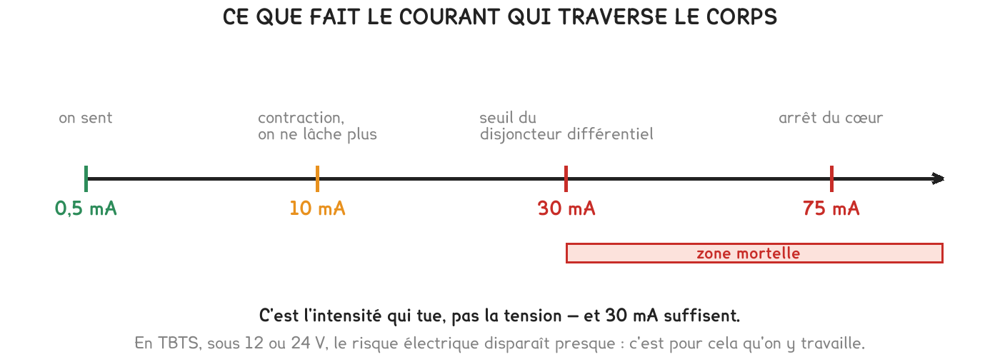

2de Bac Pro CIEL
Votre tuteur vous arrête devant le coffret : montre-moi ce qui te protège, toi, et ce qui protège le matériel. Ce n'est pas la même chose, et un chiffre suffit à le prouver — trente milliampères.
3 exercices · 34 items d'entraînement · 1 repli · 3 figures
Savoirs travaillés
Vous intervenez dans un local technique. Votre tuteur vous dit : « Avant de toucher quoi que ce soit, montre-moi ce qui te protège, toi, et ce qui protège le matériel. Ce n’est pas la même chose. »
Ce qui est dangereux, c’est l’intensité, pas la tension seule. Toute la séquence tient dans cette phrase, et les seuils se comptent en milliampères — pas en ampères, et surtout pas en volts.

Les quatre seuils, en milliampères :
Le différentiel coupe à 30 mA, soit bien avant les 75 mA dangereux. Il n’est pas réglé au hasard : il est placé du bon côté du seuil, et c’est ce qui en fait une protection des personnes.
| Le dispositif | Ce qu’il détecte | Il protège… |
|---|---|---|
| Le fusible | un courant trop fort dans le circuit | le matériel |
| Le disjoncteur | la même chose, et il se réarme | le matériel |
| Le disjoncteur différentiel | l’écart entre le courant qui part et celui qui revient | les personnes |
| La mise à la terre | rien : elle offre un chemin au courant de fuite | les personnes |
Les deux colonnes de droite ne se remplacent pas l’une l’autre. Un disjoncteur parfaitement calibré laisse passer sans broncher les 30 mA qui tuent : il ne les voit pas, parce qu’il ne compte que ce qui circule dans le fil.
Un fusible ne protège jamais une personne. Calibré à 16 A, il laisse passer 16 000 mA — plus de cinq cents fois le seuil de danger. Il aura fondu longtemps après que le cœur se sera arrêté.
Le différentiel et la mise à la terre travaillent ensemble : la terre donne au courant de fuite un chemin facile, et c’est ce déséquilibre que le différentiel détecte. Sans terre, la fuite passe par la personne, et le différentiel coupe quand même — mais après l’avoir traversée.
En dessous d’un certain seuil, une tension ne peut pas faire passer assez de courant à travers un corps pour être dangereuse. Ce seuil n’est pas le même en alternatif et en continu, et c’est le continu qui est le plus permissif.
La TBTS s’arrête à 50 V alternatifs et 120 V continus.
Le switch, les cartes et les capteurs y travaillent : 5 V, 12 V, 48 V continus.
TBTS ne veut pas dire sans précaution. Un câble PoE transporte 625 mA sous 48 V, soit vingt fois le seuil du différentiel — et on le tient pourtant en main. Ce qui compte, c’est le courant qui traverserait le corps, pas celui qui circule dans le câble.
Jamais de mesure de tension avec le multimètre en position ampèremètre. Il est alors presque un fil : branché aux bornes d’une source, il provoque un court-circuit. C’est la façon la plus rapide de détruire un multimètre.
Exercice · ELEC
Un différentiel est réglé à 30 mA. Un défaut laisse fuir 0,045 A. De combien de milliampères dépasse-t-on le seuil de déclenchement ?
Exercice · ELEC
Un fusible est calibré à 16 A. Combien de fois ce calibre dépasse-t-il le seuil de danger de 30 mA ?
Exercice · ELEC
Montrez à votre tuteur ce qui vous protège, vous, et ce qui protège le matériel.
Les mêmes séries que sur la feuille. On remplit chaque case, puis on vérifie la série entière d’un coup.
Série · AU
Série · AU
Série · ELEC
Série · ELEC
Série · ELEC
Série · AU
Pour aller plus loin
En tête d’installation, on trouve souvent un différentiel réglé à 300 mA, et non à 30. Il coupe donc dix fois plus tard.
Or le seuil d’arrêt du cœur est à 75 mA. Un différentiel de 300 mA laisse passer quatre fois cette valeur sans broncher : il ne protège pas les personnes.
Son rôle est ailleurs : il détecte les fuites lentes d’une installation entière — une isolation qui vieillit, de l’humidité — avant qu’elles ne déclenchent un incendie. C’est une protection du bâtiment, posée en amont de celles qui vous protègent, vous.
Comment le reconnaître sur le coffret : la valeur est écrite sur la face avant, en milliampères. Sur une installation domestique, on trouve un 500 mA ou un 300 mA en tête, puis des 30 mA par groupe de circuits. Si vous ne voyez aucun 30 mA, l’installation n’est pas aux normes, et c’est à signaler avant d’intervenir.
Cette page rappelle la séquence. Elle ne remplace pas les documents distribués et ne donne aucun corrigé. Tous les calculs se font dans votre tablette ; rien n'est enregistré.